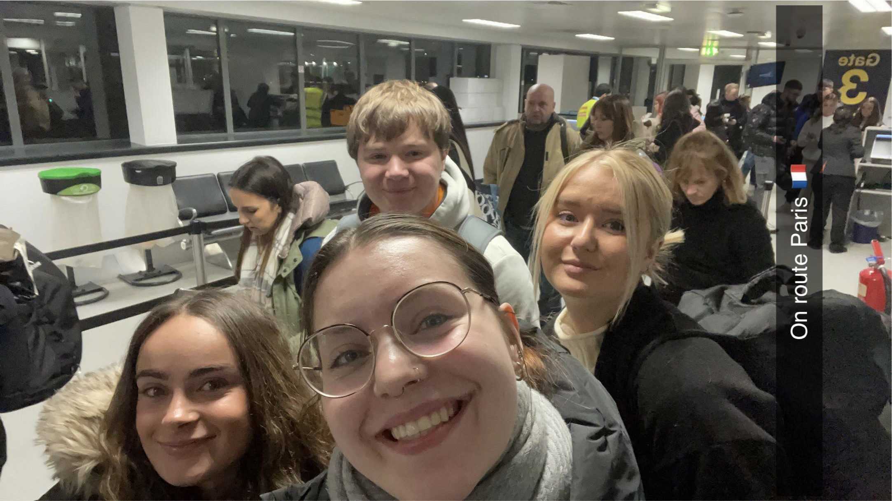

Hello, welcome to 4 days in Paris with Jake, Aimee, Jessie and Evangeline.
Up early for 9am uni start and last minute packing. Quick stop for drinks and snacks before meeting the girls at there house to hit the road to for Manchester. Lots of Nicki Minaj, Megan Trainer and Madonna singing, fearing for life with my amazing driving and we arrived to the very easy to find car park. Quick walk to the terminal and we are in. Despite the warning text from easyJet for a two and a half hour wait at the airport, we were straight through security with lots of time for shopping and, of course, a drink at the bar.
Plane set off 1 minute early with everyone on it including the crying baby in-front. Luckily it had shut up by the time we were in the air. Very smooth and quick flight, almost the length of The Muppets movie, and in to the airport 8 minutes early. Super quick passport security with the fancy face reading machine and down to the extremely complicated train system. Well prepared Jessie knew exactly what we needed from the ticket office and what train was needed.
After one very busy train we decided to walk the rest. We were a little hesitant about the area our hostel was in as the girls didn’t feel particularly safe however once we arrived this changed. A very lovely hostel with friendly staff. Four key cards to lock our rooms and our own shower, we were pleasantly surprised. After a very long day we decided to go grab a quick bite at our local maccies and head to bed ready for exploring Paris tomorrow.
